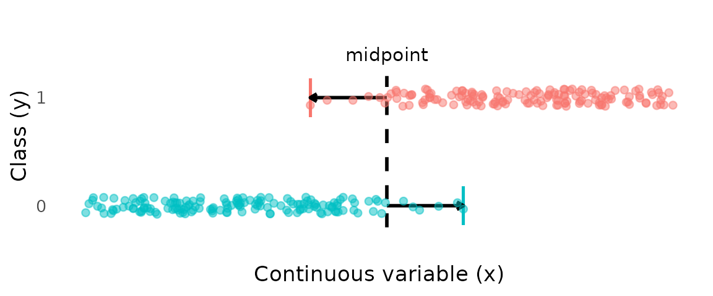
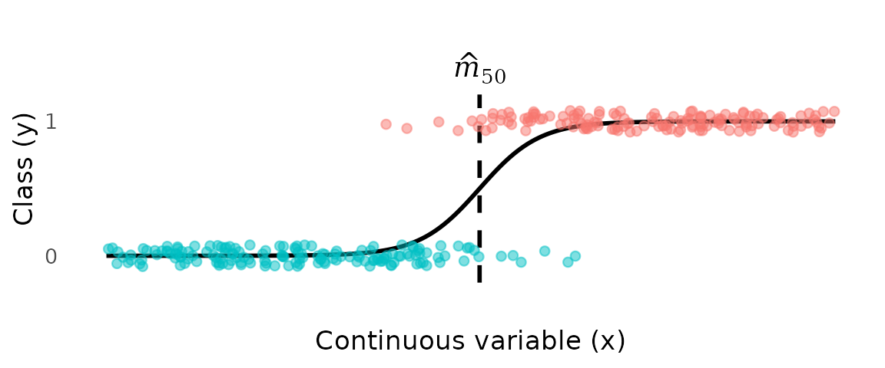
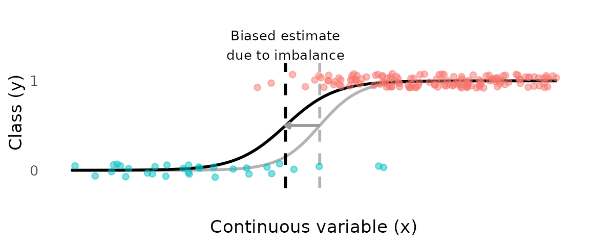
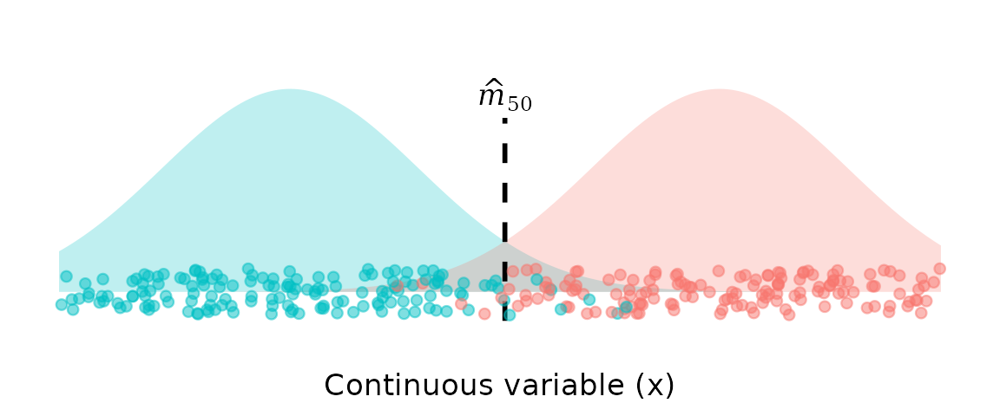
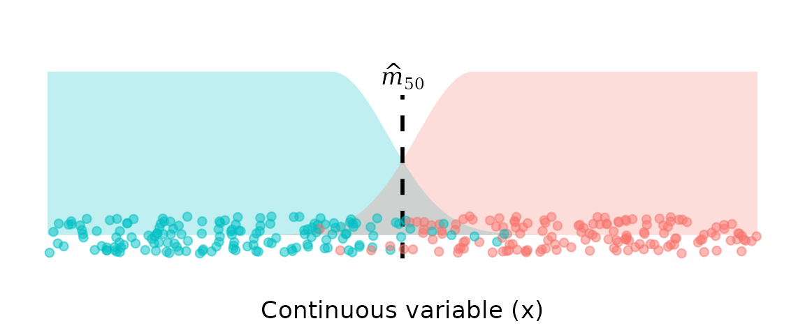

The goal
Estimating a transition point between two classes—the point along a continuous variable where the probability shifts from one class to the other for binary variable —is a simple and common task. For example, the length at which individuals of a species shift from immature to mature is an important life-history parameter.
Given the data below, we can easily identify a broad “transition zone”, where the transition from class 0 to class 1 takes place. However, a more specific goal is to estimate the “transition point”, or —the value of where the probability of being in class 1 reaches 50%.
In maturity studies, this point might be called “length at 50% maturity”. To the left of , class 0 is more likely; to the right of , class 1 is more likely.
A critical point about what represents: it is a biological property of an individual, not a property of the sampled population. The question being asked is: for a given individual of length , at what length does the evidence from length alone make maturity more probable than immaturity? The answer depends only on the length-conditional distributions of mature and immature individuals—it has nothing to do with how many of each were sampled. In practice, sampling is almost always biased with respect to class: gear selectivity, habitat preferences, and variation in sampling effort routinely produce samples with very different proportions of mature and immature individuals, none of which reflects the underlying biology. A valid estimator of must be independent of these sampling vagaries.
Problems with existing methods
The statistical methods typically applied to this task are based on inappropriate assumptions and likely produce biased estimates of transition points.
Below, we discuss three current approaches, highlighting the limitations of each.
Ad hoc midpoint methods
A common approach is to avoid fitting a model altogether and instead compute a transition point directly from the data. One such method is to take the midpoint between the smallest mature and largest immature individuals. The advantage of this approach is that it focuses on the transition zone only. However, this approach (1) has no probabilistic foundation and so cannot quantify uncertainty, and (2) uses only two data points, so has high variance.

Discriminative models (e.g., logistic regression)
Discriminative models such as logistic regression estimate the conditional probability directly. In other words, the model focuses on predicting class labels based on the prevalence of one class vs another at each value of .
In logistic regression, a logistic curve is fit to the data, and the estimate of the transition point is defined as the value of where the fitted probability equals 0.5.

While simple and familiar, logistic regression (and other discriminative models) give the wrong answer to the question being asked. A discriminative model estimates directly from the data, which means the fitted curve reflects the class composition of the sample, not the biology of the individual. The intercept of the logistic curve is determined partly by the ratio of mature to immature individuals in the data. Change the sampling effort, the gear, or the habitat surveyed, and the intercept shifts—even if the underlying biology is unchanged.
This is not merely a practical inconvenience. It means logistic regression is answering a subtly different question: what is the probability that a randomly selected individual from this particular sample, of length , is mature? That is a question about the sample, not about the species. For estimating as a biological parameter, it is the wrong question.
The consequence is that logistic regression estimates of are sensitive to class imbalance in the sample. If immature individuals are over-represented—as commonly occurs when sampling effort concentrates in juvenile habitats, or when small-mesh gear retains juveniles preferentially—the fitted curve shifts toward the immature class and is overestimated. The reverse occurs when mature individuals dominate the sample.
In the plot below, 85% of the class 0 observations have been removed, resulting a highly imbalanced dataset and a biased estimate of .

An advantage of the discriminative-model approach (over other methods) is that inferences about the transition point are based mainly on data near the transition zone.
Generative models (e.g., Linear Discriminant Analysis)
Generative models (often called generative classifiers) are an alternative approach to discriminative models. They model the class-conditional densities
,
and then obtain via Bayes’ rule (usually applied with equal prior probabilities).
As with discriminative models, the estimate of is then defined as the value of where the two class densities are equal, i.e., where .

The generative classifier approach has the advantage of being less sensitive to class imbalance, since the transition point estimate depends on the shapes of the class distributions, not their relative sample sizes. This is achieved by fitting a density to each class separately, and then calculating the transition point based on the relative densities of the two classes. Linear Discriminant Analysis (LDA) is a widely used generative classifier that fits a Gaussian (Normal) density to each class.
This approach is less sensitive to class imbalance, they can suffer from another important limitation: estimates of transition points from LDA (and other generative models) are potentially influenced by all values of , not just those near the transition zone.
Observations far from the transition zone greatly affect the fitted density for that class, and therefore have undue influence on the estimate of the transition point. For example, if the true transition is around 1200 mm, individuals at 200–400 mm should not influence the estimate of the maturity transition.
In LDA in particular, because symmetrical Gaussian distributions are fit to each class, the behaviour of the tails near the transition are determined as much by the very lowest and highest values of as by those near the transition.
In the context of length-at-maturity, this means that very small immature individuals (e.g., neonates) and very large mature individuals have as much influence on the transition point as individuals whose lengths fall near the maturity boundary. This is unappealing, because these distant observations contain almost no information about the location of the transition, yet they shape the Gaussian fits and can shift the inferred transition point substantially.
Furthermore, the two tails that actually matter for the transition—the upper tail of the immature class and the lower tail of the mature class—are not modelled directly against each other. Instead, each tail is constrained to be the mirror image of the opposite tail of its own class (because of the global, class-wise, Gaussian assumption).
Summary
Data can be subject to all sorts of sampling biases, favouring one class over another, or certain values of over others. Often, these biases are unknown and uncontrollable, and can seriously distort estimates of transition points.
What is needed is a model for estimating transition points that:
- is probabilistic and can quantify uncertainty,
- estimates a biological property of individuals, not a property of the sample,
- is independent of class prevalence in the data, and
- focuses inference on data in the overlap region, rather than distant data.
The STAGE solution
The STAGE model is a Bayesian generative classifier where each class is fit with an asymmetric Uniform–Gaussian mixture.
-
Immature (y = 0):
uniform plateau → Gaussian decay approaching the transition. -
Mature (y = 1):
Gaussian rise out of the transition → uniform plateau.

The STAGE model has the following key properties:
Asks the right biological question
STAGE estimates as the point where the two class-conditional densities are equal, using equal class priors. This directly answers the question of interest: at what length is an individual of unknown maturity status equally likely to be mature or immature, based on length alone? Because the class priors are fixed at and do not depend on sample composition, the estimate of is by construction independent of class imbalance in the data. Gear selectivity, habitat-driven sampling bias, and variation in field effort cannot distort the estimate, because the prevalence of each class in the sample plays no role in the likelihood. This is not merely robustness to imbalance—it is immunity, and it follows directly from asking the right question.Focus on data in the transition zone
Observations far from the transition zone enter via the uniform component, so they have little influence on the estimate of the transition point. Individuals that provide no information about the boundary contribute only a constant term to the likelihood.Decline in one class is matched with increase in the other
In many transition problems (such as length at maturity), the density of the lower class must decline in exactly the region where the higher-class density increases. STAGE encodes this by fitting a shared standard deviation to the upper tail of the lower class and the lower tail of the higher class. By jointly modelling these tails, any change in one class’s decline implies a matching change in the other’s rise. This ensures that the estimated transition point is driven by the relative behaviour of the two densities, not by the marginal behaviour of either class on its own.Bayesian inference
STAGE is presented under a Bayesian paradigm, providing the flexibility to incorporate prior information and to quantify uncertainty in any derived parameter or quantity. Multi-population structure is handled naturally through a hierarchical model: uncertainty in the densities propagates directly to uncertainty in , and population-level patterns can be estimated efficiently.
The STAGE likelihood is a structured mixture inspired by the plateau–Gaussian formulation of Lau & Krumscheid (2022), adapted specifically for transition-point estimation.